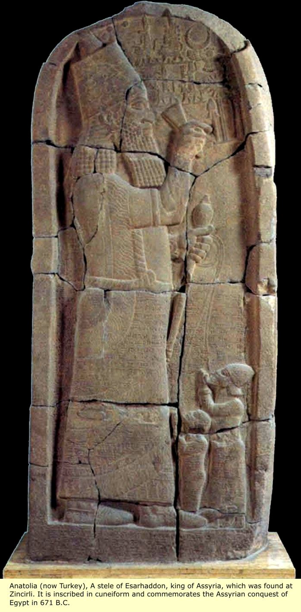
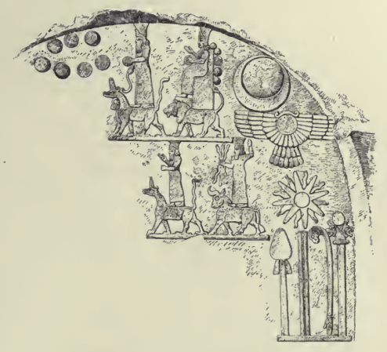

Assyrian Ideology & the Art of Propaganda:
Royal Images of Conquest, Divinity, and Subjugation in Esarhaddon’s Victory Stele
by Susan Bin
INTRODUCTION
By examining the historical context and visuals of the Victory Stele of Esarhaddon, we can learn how the visual dimensions of empire are depicted. In particular, the Victory Stele negotiates Assyrian ideologies of royalty, conquest, and relationships to the Other – either a divine entity or a subjugated foreigner – through established iconography and interaction of text and image. Furthermore, as a monumental aggrandizing display itself, the Victory Stele projects larger-than-life statements to ancient and modern viewers about Assyrian identity and conquest.
HISTORICAL CONTEXT
Made of dolerite native to Egypt and erected in ancient Sam’al, the modern-day Turkish site of Zincirli Höyük, the Victory Stele of Esarhaddon commemorates the Assyrian conquest of Memphis over the Egyptian Pharoah Taharqa in 671 BCE (Kahn). Emperor from 681 to 669 BCE, Esarhaddon continued an expansive Assyrian territorial campaign initiated by his father Sennacherib to now encompass Kush, modern-day Sudan, and Egypt (Chapman). Thus, while the stele depicts a single moment of victory – the 671 BCE defeat of Taharqa – it effectively incorporates this event into a larger narrative of Assyrian royal dominance with its newly subjugated peoples and potential combatant lands as the intended recipients.
The Victory Stele depicts the Assyrian Empire’s victory over Egypt and Tyre, a Phoenician city-state, and was originally part of a pictorial program devised by Esarhaddon that included three known stelae (Winter). The cast version from the Harvard Semitic Museum is of the original stele that was located at the outer citadel ceremonial gates of ancient Sam’al and is now housed in the Pergamon Museum in Berlin, Germany. Under Esarhaddon, a copy was erected alongside previous Egyptian and Assyrian imperial commemorative stelae at the estuary of Nahr al-Kalb (Lipiński). The original locations of other copies, in problematic regions under Assyrian control, were most likely strategic displays of propagandistic warning signs.
VISUAL ANALYSIS
The Victory Stele is approximately 3.5 meters high, and 1.35 meters wide. In medium relief, the front depicts three main profiled figures and in low relief Assyrian deities and Akkadian cuneiform (Figure 1). The enlarged main figure that dominates the tableau is easily identified as Esarhaddon. As the principal actor of this visual space, he is a codification of kingship following an iconographic tradition involving royal regalia, including his headgear and a ceremonial mace club, and masculine fitness, including his stylized beard. At his feet in bondage are two smaller prostrating figures (Figure 3). The smaller kneeling figure roped by the neck is the crown prince of Egypt, Taharqa's son, Ushankhuru. The other attendant held captive by his lip wearing a conical hat, a visual marker for a Phoenician, is likely Ba’al of Tyre; Ba’al was a tributary to the Assyrians, attested to by a cuneiform treaty between Ba’al and Esarhaddon (“Esarhaddon’s Treaty with Ba’al of Tyre”). The positions of these vassals ‘owned’ by Esarhaddo operate as a simultaneous threat and demonstration of the reaches of the Assyrian Empire.
While Esarhaddon is exalted on the human scale, the visual rhetoric of the tableau places above him the symbolic shorthand representations of the Assyrian gods in low relief (Figure 2). Below Esarhaddon’s waist, the inscribed Akkadian cuneiform tells the story of Taharqa’s defeat as dictated by the king. Furthermore, this overlay of text-on-image primes the viewer to read the stele’s front from left-to-right, which augments the left visual position of Esarhaddon. Moreover, with text and image operating in parallel in narrative space, the king is, in effect, both the composer and the message. The cuneiform begins by poetically invoking the gods who are depicted in the top right of the stele (Figure 2): Assur (winged disk with bow and arrow denoting kingship), Anu, Bel, Ea, Sin/Nanna (crescent moon), Shamash (sun), Adad, Marduk (on top of a bull), Ishtar (star), and other warrior gods. In fact, the visual motifs of the gods are mimicked in Esarhaddon’s jewelry. Although the cuneiform describes Esarhaddon as an instrument and chosen ally of divine sanctioned rule, his realm is depicted as both segregated in worship from the sacred authority of the Assyrian gods and mirrored by his own earthly supplicants.
The cuneiform then elaborates on the particular historical moment being commemorated. First, Esarhaddon educates his audience by declaring himself King of Kush. Then, he goes on to describe the destruction of Memphis, the royal city of Egypt, and the besieging of Taharqa's queen, harem, heir, progeny, and goods (Luckenbill). The text ends by vexing future foes bent on defacing the stele. This concern for reputation is reflected in the images of the two Assyrian crown princes flanking Esarhaddon on the stele’s sides, which function as projections of future guardians of imperial legacy. Thus, the Victory Stele of Esarhaddon combines text and image in a single experience to initiate the viewer into an intense program designed to both preserve and build an active memory of Assyrian conquest beyond the empire’s physical decline.
To its contemporaries, the Victory Stele projected a royal image of Assyrian ideology to a large dominion of non-Assyrian foreigners. Today, the cast version of Esarhaddon’s Victory Stele in the Harvard Semitic Museum greets visitors on the third floor as a virtual doorway to the monuments and artifacts of the Ancient Near East; in doing so, it retains its original royal rhetoric of priming viewers into an image-conscious construction of Assyrian imperial ideology. For us, the stele’s modern spatial context is a testament to the Assyrian state apparatus’s usage of historical narrative as a prime vehicle for a spectatorial consciousness.
APPENDIX
Figure 1

Figure 2

WORKS CITED
Chapman, Charles, Georges Perrot, and Hall. A History of Art in Chaldaea & Assyria, Volume 2. 1884.“Esarhaddon’s Treaty with Ba’al of Tyre,” The Open Richly Annotated Cuneiform Corpus (K 3500 + K 4444 + K 10235. SAA02 005), at http://oracc.museum.upenn.edu/saao/saa02/corpus (22 Nov. 2015)Kahn, Dan'el. "Tahaarqa, King of Kush and the Assyrians." Journal for the Study of Egyptian Antiquities 31 (2004), 109–28.Lipiński, Edward. Itineria Phoenicia. Orientalia Lovaniensia Analecta 127. Leuven, Peeters: 2003.Luckenbill, Daniel David. Ancient Records of Assyria and Babylonia. Vol. 2: From Sargon to the End. Chicago: University of Chicago Press, 1927.Winter, Irene J. On Art in the Ancient Near East, 1: Of the First Millennium BCE. Boston: Brill, 2010.--. “On the Problems of Karatepe: The Reliefs and Their Context.” Anatolian Studies. Vol. 29 (1979), 115-151.